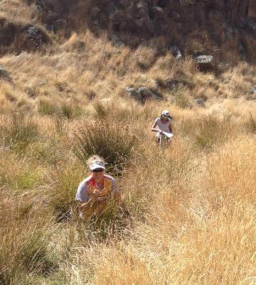

27th February 2014
http://facebook.com/NZRogaining
| New Zealand Rogaining Association (Inc.) 27th February 2014 |
http://facebook.com/NZRogaining |
• Events in March and April
• Other NZ event news
• Recent results
• Championships coming up – World, Australasian, and NZ
Keep your eye on:
1. the NZRA website event calendar at http://www.rogaine.org.nz/ andfor details of future rogaines. Two series of short rogaines in Taranaki, and Bay of Plenty are listed on the Maptalk site.
2. the Maptalk website, http://www.maptalk.co.nz/events/default.cfm?t=Rogaine

Generation. The more than 200 participants taking part in the 3-hr and 90-min events was well over four times the number of online entries causing slight havoc with map and clue-sheet supplies. In superb weather teams enjoyed great conditions for navigating the challenging open country with intricate rocky outcrops and a complex trail network. The exposed coastal terrain was put to use with some control points located on the rocky shoreline. Godley Head’s historic military area concealed one clue in an underground bunker.